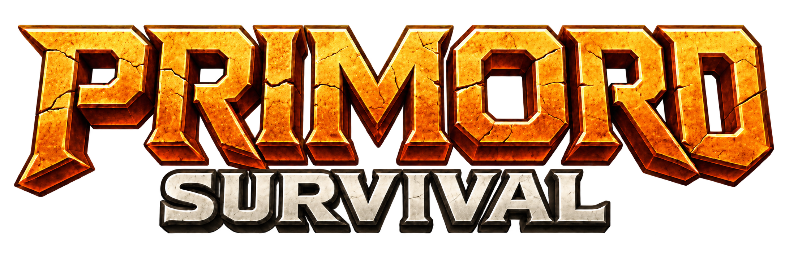
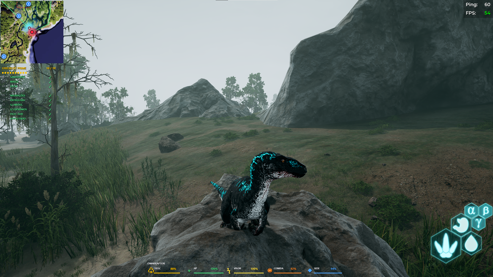
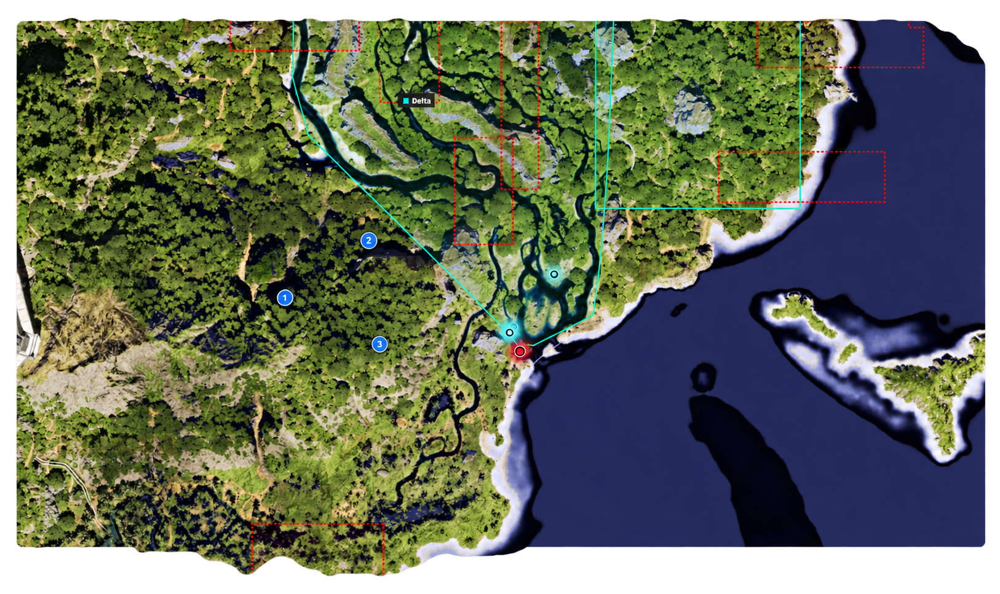

Seu mapa, sempre por perto.
Acompanhe a posição no minimapa e amplie com F9 para explorar a região. Ajuste tamanho, zoom e opacidade ao seu jeito de jogar.

Fale comigo
PRIMORD SURVIVAL · THE ISLE
Sua jornada com mais informação. Minimapa, marcações, status e um guia de builds para consultar enquanto joga.
01 / RECURSOS
Do primeiro ponto no mapa à escolha da próxima build: as informações que você precisa, em um só lugar.
Acompanhe a posição no minimapa e amplie com F9 para explorar a região. Ajuste tamanho, zoom e opacidade ao seu jeito de jogar.
Crie pontos azuis com o botão direito no mapa ampliado. No minimapa, destinos fora da área visível aparecem na borda, indicando a direção.
Crescimento, vida, vigor, comida e sede no HUD. No Primord, acompanhe também o checklist Prime e o histórico de visitas a áreas.
Explore dinos, builds de Sobrevivência, PvP e PvP + Sobrevivência. Consulte mutações, efeitos e bônus por etapa; abra o resumo da sua seleção com F4.
O guia ajuda na consulta e no planejamento. Selecionar uma build no painel não aplica mutações ao dinossauro no jogo.
02 / NO CAMINHO CERTO
Guarde locais importantes e encontre a direção de volta. Mantenha seus pontos de referência para continuar a jornada no Primord.

F9 MAPA AMPLIADOAlterne entre o minimapa e o mapa ampliado. Esc retorna à visão pequena.
Clique para criar uma marca azul. Use o botão direito sobre a bolinha para apagar.
Mesmo fora da visão pequena, o ponto aparece na borda do minimapa, na direção do destino.
03 / POR DENTRO DO PRIMORD
Explore os menus e conheça os detalhes. Selecione uma tela ou dê play para acompanhar a apresentação.
HUD / VISÃO GERAL
O minimapa e o checklist ficam à esquerda. Na base da tela, acompanhe crescimento, HP, vigor, comida e sede sem perder de vista o que acontece ao redor.
O HUD acompanha o dino ativo no Primord.
04 / NA PONTA DOS DEDOS
Os principais controles para usar durante o jogo.
05 / VAMOS CONVERSAR
Quer conhecer melhor, tirar dúvidas ou saber sobre acesso? Me chama no Discord ou no Instagram.
Adicione pelo nome de usuário.
Me chama no direct.
Disponível para Windows. Instalar e atualizar não exige key; para utilizar, é necessária uma licença válida. Os dados do HUD dependem do painel Primord e de um dino ativo.